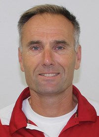
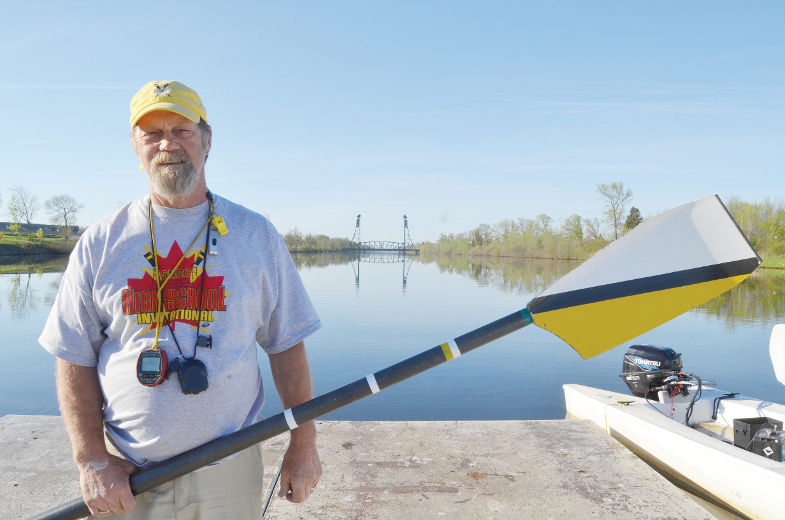
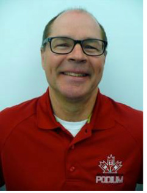
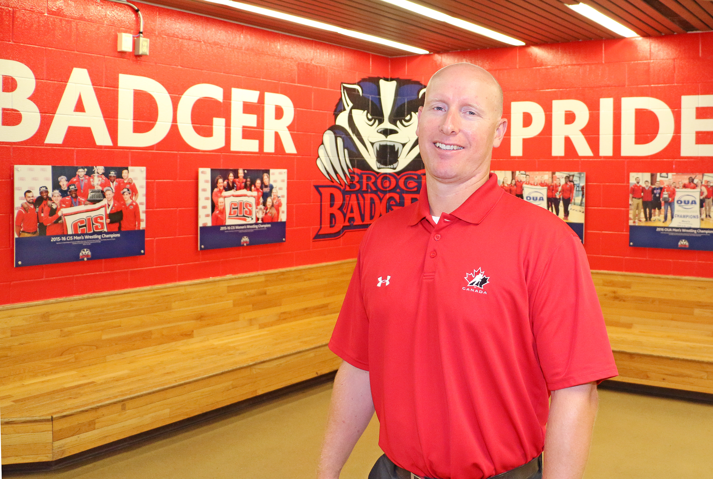

________________________________________________________________________________________________________
Head Coach: Peter Somerwil
Somerwil enters his 13th full season as the head coach of the Brock men’s and women’s rowing program. He has been involved in rowing for over 30 years as both an athlete and coach in all levels of rowing right from high school to the world rowing scene. Somerwil was the club captain of the St. Catharines Rowing Club where he ran all operational aspects of the rowing activities. In 2004 he had the opportunity to be highly involved with the 100th Anniversary of the club. He also has been highly involved at the World level as an athlete, administrator and coach. He played a major role in both the 1996 World Rowing Championships Strathclyde Scotland as Team Manager and Assistant ltwt mens coach and 1999 World Rowing Championships hosted by the St. Catharines Rowing Club as part of the organizing committee. This past season with the Brock Badgers, Peter was awarded the 2015 CURC Men’s Coach of the Year. Somerwil has previously won both the 2012 OUA Men’s Coach of the Year and 2012 CURC Men’s Coach of the Year.
Contact info
Assistant Coach: Ron Burak

Brock University would like to congratulate Ron on being named the Rowing Canada Male Coach of the Year," said Brock Director of Athletics Robert Hilson. "His rowing background dates back to 1976 Olympics and he has been instrumental in building women's rowing in Niagara for the past 12 years as a coach at different levels."
Swede has been coaching for 12 years at various levels including Denis Morris High School, St. Catharines Rowing Club and Brock University.
This summer Swede coached the flyweight women's four and senior women's light pair to gold at Royal Canadian Henley, as well as having four other second place finishes.
In the summer at the Ontario Championships he coached the winning women's under 23 eight.
Contact info
Talent Id Coach: Paul Beedling
Brock University has partnered with Row Ontario and Rowing Canada to be an official Talent Identification Centre for rowing in Canada. Paul started at Brock in 2010 after coaching very successfully at the St. Catharines Rowing Club, winning 4 Canadian Henley events in 2009. Paul has represented Canada as an athlete 6 times at the World Championships. Anyone that has not rowed before but is interested in trying rowing should contact Paul.
Strength Coach: Steve Lidstone
Lidstone /brings an impressive background of high performance training with him to Brock. He has served as a strength and conditioning co-ordinator, athletic therapist and lecturer in the school of kinesiology at McMaster for the past nine years, heading up a team of three strength and conditioning coaches and more than 40 student volunteers. He has also consulted and worked as part of strength and conditioning teams for Canada’s national teams in hockey, basketball, trampoline and waterskiing. Through McMaster’s high performance centre, Lidstone has worked with numerous professional athletes and 12 of the school’s varsity teams.
________________________________________________________________________________________________________
Along with our outstanding coaches Brock Univerisity has one of the best boat fleets in the OUA consisting of over 20 single shells more coming each and every year, ten pair doubles, six fours and six eight man boats. Every year we try and make a new purchase for our team. Over the last two years Brock Rowing has made two massive purchases including four pair/doubles and The Ultimate Super Predator from Hudson boat works. This allows us to be able to compete with no limits and alow us to perform to our best ability.
Most of Brock's crew boat fleet are composed of Hudson's not only because they are made in North America but because of their fast boats. In the wild, a SHARK is a marvel of evolution and one of nature's most successful, most enduring designs -- over thousands of years, it has evolved, refined, and adapted to its environment to become the world's most fearsome predator.
And it's from this magnificent creature that we draw our inspiration. After all, when you're chasing your personal best or your competition, what better mindset to emulate than a SHARK?
With our supperior design elements, construction, and features that makes a HUDSON unlike any other boat on the water and lets crews achieve the potential they deserve.
_______________________________________________________________________________
Brock has a number of Fluids Ranging from a lightweight shell to a heavy weight shell. all of Brock's Fluids are single shells allowing athletes to focus on their own individual power output.
Fluidesign manufactures Elite racing shells with state of the art design and construction. The meticulous carbon engineering delivers a durable, stiff, and fast experience with each row. Fluidesign's exclusive clear
finishes highlights the beauty of carbon while reducing maintenance to maximize performance. Fluidesign shells are simply too beautiful not to keep clear.
_______________________________________________________________________________
Brock has a number of Fluids Ranging from a lightweight shell to a heavy weight shell. all of Brock's Fluids are single shells allowing athletes to focus on their own individual power output.
Fluidesign manufactures Elite racing shells with state of the art design and construction. The meticulous carbon engineering delivers a durable, stiff, and fast experience with each row. Fluidesign's exclusive clear
finishes highlights the beauty of carbon while reducing maintenance to maximize performance. Fluidesign shells are simply too beautiful not to keep clear.